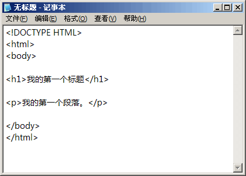

HTML 简介
HTML 指的是超文本标记语言 (Hyper Text Markup Language)，是一种用来描述网页的标记语言 (markup language)，而不是编程语言。HTML 使用标记标签(markup tag)来描述网页
HTML 标签
HTML 标记标签通常被称为 HTML 标签 (HTML tag)。
- HTML 标签是由尖括号包围的关键词，比如 <html>
- HTML 标签通常是成对出现的，比如 <p> 和 </p>
- 标签对中的第一个标签是开始标签，第二个标签是结束标签
- 开始和结束标签也被称为开放标签和闭合标签
HTML 文档
- HTML 文档描述网页
- HTML 文档包含 HTML 标签和纯文本
Web 浏览器的作用是读取 HTML 文档，并以网页的形式显示出它们。浏览器不会显示 HTML 标签，而是使用标签来解释页面的内容：
<html> <body> <h1>My First Heading</h1> <p>My first paragraph.</p> </body> </html>
例子解释
- <html> 与 </html> 之间的文本描述网页
- <body> 与 </body> 之间的文本是可见的页面内容
- <h1> 与 </h1> 之间的文本被显示为标题
- <p> 与 </p> 之间的文本被显示为段落
HTML5
HTML5 是HTML的最新标准，是HTML的上一个版本XHTML1和上上个版本HTML4的结合与发展。除了HTML之外，HTML5还涉及了CSS和浏览器端javascript的相关内容
HTML5 是 W3C 与 WHATWG 合作的结果。
注：W3C 指 World Wide Web Consortium，万维网联盟。
注：WHATWG 指 Web Hypertext Application Technology Working Group。
WHATWG 致力于 web 表单和应用程序，而 W3C 专注于 XHTML 2.0。后W3C被迫放弃XHTML 2.0，双方决定进行合作，共同开发HTML5规范。
HTML5新特性
HTML5 中的一些有趣的新特性：
- 用于绘画的 canvas 元素
- 用于媒介回放的 video 和 audio 元素
- 对本地离线存储的更好的支持
- 新的语义标签，比如 article、footer、header、nav、section
- 新的表单控件，比如 calendar、date、time、email、url、search
实例
<!DOCTYPE HTML> <html> <body> <video width="320" height="240" controls="controls"> <source src="movie.ogg" type="video/ogg"> <source src="movie.mp4" type="video/mp4"> Your browser does not support the video tag. </video> </body> </html>
HTML 文档编写
任何纯文本编辑器都可以用来编辑HTML，比如记事本等。但在实际的开发中，一般使用更专业的工具来编辑 HTML。
通过记事本，依照以下四步来创建一个网页。
步骤一：启动记事本
步骤二：用记事本来编辑 HTML
在记事本中键入 HTML 代码：
步骤三：保存 HTML
保存 HTML 文件时，既可以使用 .htm 也可以使用 .html 扩展名。两者没有区别，完全根据您的喜好。
步骤四：用浏览器打开这个 HTML 文件
结果应该类似这样：